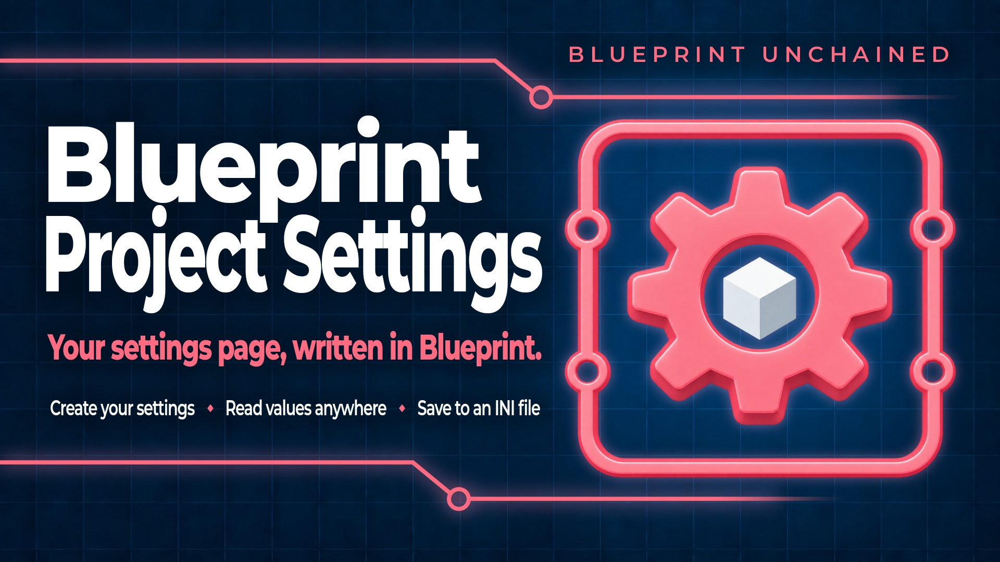
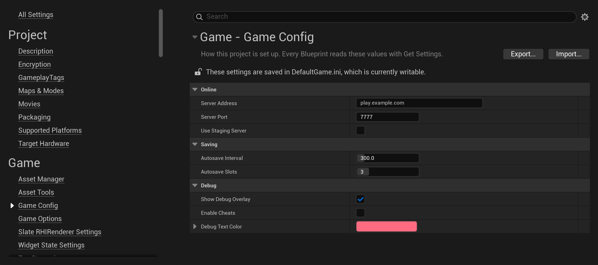
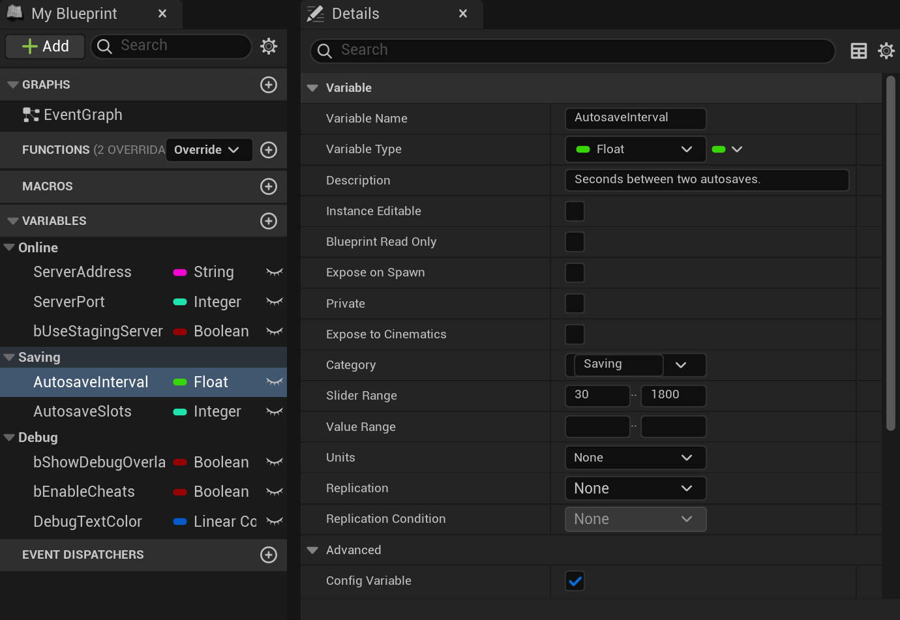
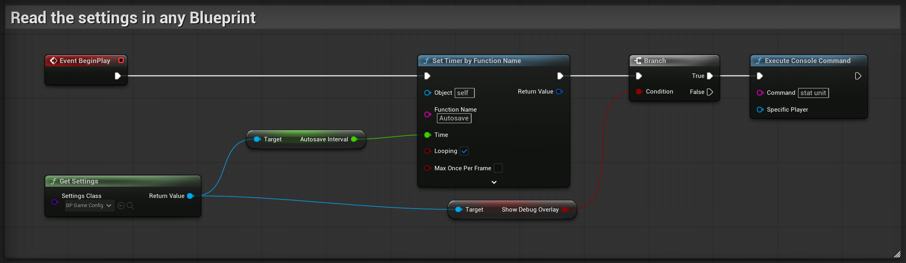
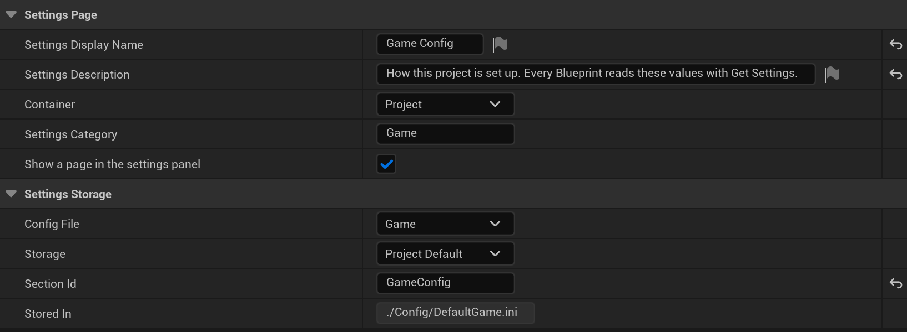
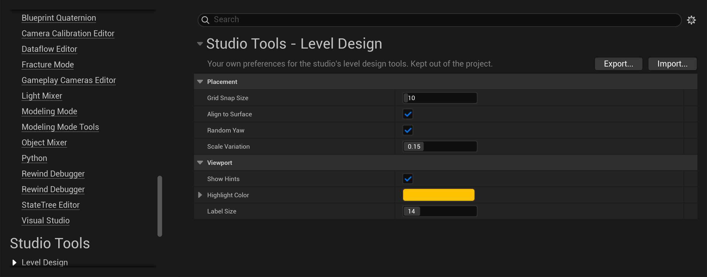
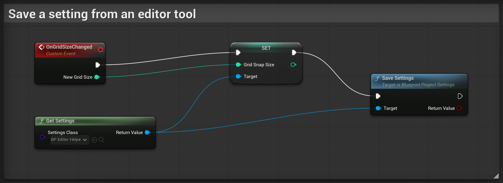

Blueprint Project Settings lets you create pages in Project Settings and Editor Preferences using Blueprint. Add variables to a settings Blueprint, compile it and read the values with Get Settings. No C++ is required.
Use a project settings page for values such as a server address, an autosave interval or debug options. Use Editor Preferences for your own tools, such as an export folder or a placement grid size. The values are stored in standard Unreal Engine ini files.

Start with Your first settings page. Beyond the basics explains storage, editor tools, saving and packaging.
This example creates a page called Game Config. It holds connection settings, save options and debug options for a small online game.
Enable Blueprint Project Settings in Edit > Plugins. Restart the editor if prompted.
In the Content Browser, choose Add > Blueprint > Blueprint Project Settings. Keep Blueprint Project Settings as the parent class and name the asset BP_GameConfig.
Open BP_GameConfig and add the variables below. In each variable's details, open Advanced and enable Config Variable. This marks the variable as a setting to store in an ini file.
| Variable | Type | Category | Default value |
|---|---|---|---|
| ServerAddress | String | Online | play.example.com |
| ServerPort | Integer | Online | 7777 |
| bUseStagingServer | Boolean | Online | unticked |
| AutosaveInterval | Float | Saving | 300 |
| AutosaveSlots | Integer | Saving | 3 |
| bShowDebugOverlay | Boolean | Debug | ticked |
| bEnableCheats | Boolean | Debug | unticked |
| DebugTextColor | Linear Color | Debug | a red |
The variable's details also control how it appears on the page:
Set each starting value in Class Defaults or in the variable's Default Value field.

In Class Defaults, open Settings Page:
Game Config.Game; a new name creates a new group.If the display name is empty, the page uses its settings section name. You can keep the default Settings Storage options for this example. The values will be stored in Config/DefaultGame.ini.
Compile and save BP_GameConfig. Open Project Settings > Game > Game Config. Your variables appear in their categories with the values you set.
Changes made on this page are saved to Config/DefaultGame.ini. For example, after changing the autosave interval to 600, the section contains:
``ini [BP_GameConfig] ServerAddress=play.example.com ServerPort=7777 bUseStagingServer=False AutosaveInterval=600.000000 AutosaveSlots=3 bShowDebugOverlay=True bEnableCheats=False DebugTextColor=(R=1.000000,G=0.147027,B=0.219526,A=1.000000) ``
Keep this file in source control to share the settings with your team. These project defaults are also included when you package the game.
Changing a setting on the page does not change the Blueprint's original defaults. The page's Reset to Defaults button restores the values set in Class Defaults.
BP_GameConfig in Settings Class.The node returns the selected Blueprint's type, so you do not need a cast.
The game mode below reads AutosaveInterval to start its autosave timer. It also reads bShowDebugOverlay to decide whether to show frame timings.

Each settings Blueprint has one shared settings object. Every Get Settings node for that class returns the same object. You do not need to spawn it or pass references between Blueprints.
Get Settings works in actors, widgets, game modes, Editor Utility Widgets and Animation Blueprints. It does not need a World or Game Instance. Stored values are loaded before Blueprint gameplay starts.
Ini files are plain text files used by Unreal Engine for configuration.
Config/UserGame.ini. Keep that personal file out of source control.Config/Android/AndroidGame.ini to override values for Android.Two options in Class Defaults > Settings Storage control storage:
The following paths are examples for Config File = Game:
| Storage | File | Use |
|---|---|---|
| Project Default | Config/DefaultGame.ini | Shared project values. Keep in source control and include with the game. |
| Project User | Config/UserGame.ini | Personal values for one developer in this project. Keep out of source control. |
| Global User | The user settings directory | Personal values for one developer across projects on this machine. |
| Saved | Saved/Config/<Platform>/Game.ini | Values for this installation that a running game can write. |
Use Project Default for shared project settings. A packaged game can read those defaults but cannot save changes back to the project's source file. In that case, Save Settings returns false and reports the reason in the log.
Use Saved for values that a packaged game needs to change. Editor config files are available only in the editor.
Stored In shows the exact path selected by Config File and Storage.

Set Container to Editor Preferences to create a page for your editor tools. Choose a category for the page, including a new category of your own.
For example, the page can hold an export folder, a placement grid size or a highlight colour.

Choose storage to match who should use the values:
Config/DefaultEditor.ini in source control.Keep personal settings files out of source control.
Editor Utility Widgets and editor scripts read these values with Get Settings. A packaged game does not read editor config files.
Changes made on a settings page are saved automatically. When your own Blueprint changes a value, save it explicitly:
The example below saves a grid size entered in an editor tool's window. The Level Design settings use personal storage for the current developer.

Check the result of Save Settings. If it returns false, read the log for the reason. See Where the values are stored for storage choices. For values changed by a packaged game, use Storage = Saved.
Call Reload Settings to discard unsaved changes. It restores the Blueprint's defaults and then applies stored values over them. A value that has never been saved returns to its default.
Each settings Blueprint stores its values under an ini section, such as [BP_GameConfig].
By default, the plugin uses the Blueprint's name without the generated class suffix _C. Moving the asset to another folder keeps that section name. Renaming the Blueprint changes it.
For a name that stays the same after both moves and renames, set Section Id in Class Defaults. Choose a unique ID before first saving or releasing the settings, and keep it unchanged. A slash in the ID is stored as a dot.
If you change an ID after saving values, move the existing values to the new section in the ini file. Otherwise, the settings will read from the new section and will not find the old values.
Give each settings Blueprint its own section. Two Blueprints using the same section and config file can overwrite each other's values. This can happen with identical asset names or when a child Blueprint keeps its parent's Section Id. The plugin reports conflicting sections in the log.
These options control the page:
The page displays your variables. Edit its layout and storage options in Class Defaults.
Changes on the page are saved through the same process as Save Settings. The page's Reset to Defaults button performs the same reset as the node.
Set the original defaults in Class Defaults or in each variable's Default Value field. Saving, duplicating or packaging the Blueprint keeps those defaults separate from the current values on your machine.
Disable Show a page in the settings panel to hide the page while keeping the settings available to Blueprints.
Reset Settings To Defaults restores the values set in the Blueprint's Class Defaults. This includes later edits to those defaults. It then saves the restored values to the ini file. The Reset to Defaults button on the settings page does the same thing.
Check the returned result:
If saving fails, the values are reset only for the current session. Read the log for the reason.
Settings classes written in C++ do not have the separate record of Blueprint defaults used by this feature. Reset returns false for those classes.
A settings Blueprint provides two events:
Other Blueprints can bind to On Settings Changed on the settings object. It notifies them after a load, save or reset, and after a change on the settings page. For example, a widget can update its display when the event fires instead of checking every frame.
Save Config Variables and Reload Config Variables also work on objects outside this plugin's settings classes. Use them for Blueprint variables marked Config Variable.
The plugin includes the settings Blueprints it discovers when packaging the game. You do not need another asset to reference each settings Blueprint.
Packaging uses the defaults set in the Blueprint, not the current ini values on the build machine. This applies to builds made from the editor and from build scripts.
Open Project Settings > Plugins > Blueprint Unchained — Project Settings to control discovery. By default, the search covers all available content folders, including plugin content. You can limit it to selected paths or list classes in Additional Settings Classes. Listed classes are configured even if they are outside the search paths or automatic discovery is off.
Compile the settings Blueprint and enable Show a page in the settings panel. Check Container to see whether the page belongs in Project Settings or Editor Preferences.
Select the specific settings Blueprint directly in Settings Class. For example, choose BP_GameConfig.
If the input wire only has the base Blueprint Project Settings class type, the result also has that base type. Select the specific class on the node, or cast the result to your settings class.
Check that the variables have Config Variable enabled. At least one config variable is needed to save values. Read the log if saving still fails.
Check that the Blueprint is in a search folder or listed under Additional Settings Classes. If automatic discovery is disabled, only listed classes are configured.
Use Storage = Saved for values the game needs to write. Project Default cannot be written by a packaged game.
Also check Config File. Editor config files are available only in the editor. Read the log for the reason Save Settings returned false.
Check whether you also renamed the Blueprint or changed Section Id. Moving an asset to another folder does not change the plugin's default section name.
Find the old section in the ini file and move its values to the section now used by the Blueprint. Use a fixed Section Id to keep the same section through future renames.
Check the node's result and the log. Reset returns false if defaults were not recorded, as with a settings class written in C++, or if the restored values could not be saved.
For help or bug reports, contact tomasz.klin@gmail.com.
Include your Unreal Engine version, plugin version, Storage option and Config File option. This manual covers plugin version 1.0.0.